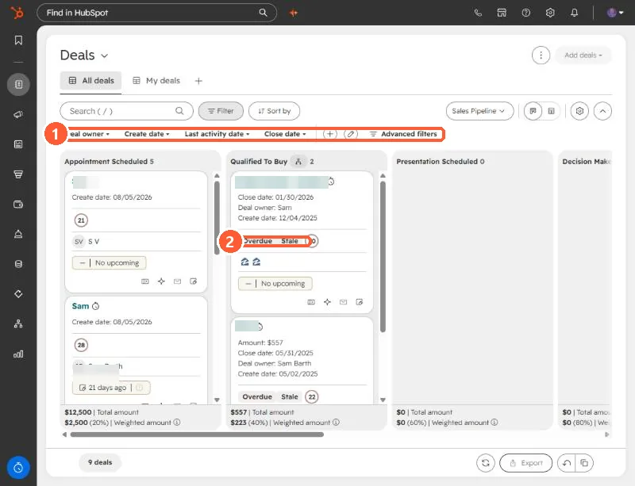

Short answer
Find old open deals with the Last activity date filter on the Deals board, open each one and check its last activity and next scheduled activity, then move it to Closed Lost with a Closed lost reason. For one pipeline of mine, six deals had no activity for years, two had none ever logged, and none had a next step, so all six were closed lost with a stale reason. Check before you close. A quiet deal is not always a dead one.
1. Find them on the board
Open Deals in board view and pick the pipeline. The quick filters above the board include Create date, Last activity date and Close date. Set Last activity date to a long window and the old deals surface. Cards can also carry tags such as Overdue and Stale, which are a prompt to look and not a rule to act on.


2. Check each deal before closing it
For each candidate, open the record and check three things: the last activity date, whether any activity is scheduled next, and who owns it. In my cleanup of one pipeline the six deals had last activity between late 2021 and early 2022, two had no activity logged at all, and none had a next activity. That is the evidence I wanted before closing.
3. Move to Closed Lost with a reason
Move the deal to Closed Lost. HubSpot has a Closed lost reason property, and a Deal loss reasons report that counts closed-lost deals by that reason, so a consistent value is worth the extra click. I used a plain "stale" reason so the cleanup is easy to find later.
- For many cards at once, hold Ctrl (Windows) or Cmd (Mac) and click cards on the board, then click Edit at the top.
- Do not delete. Closing keeps the deal and its history in the portal.
4. Follow up if it makes sense
Closed-lost does not have to be the end. Once the deals are closed, you can build a list of those contacts and send one re-engagement email. That is a separate decision, so make it on purpose.
If the deals belong to someone else, tell them before you close, or ask them to confirm the list. Changing a rep's pipeline without telling them causes avoidable arguments.